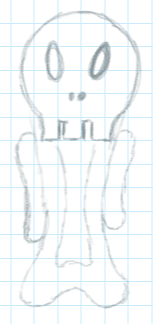
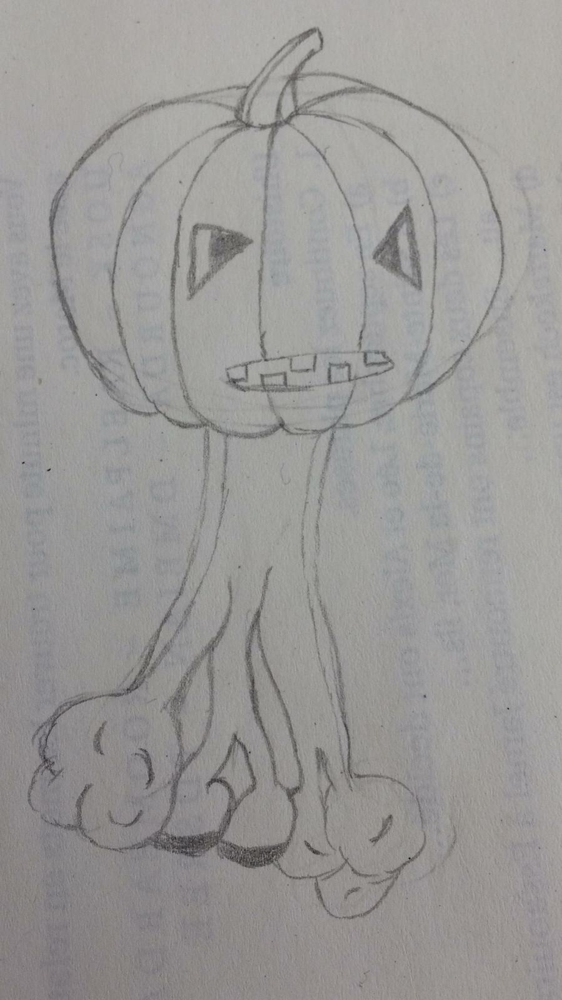
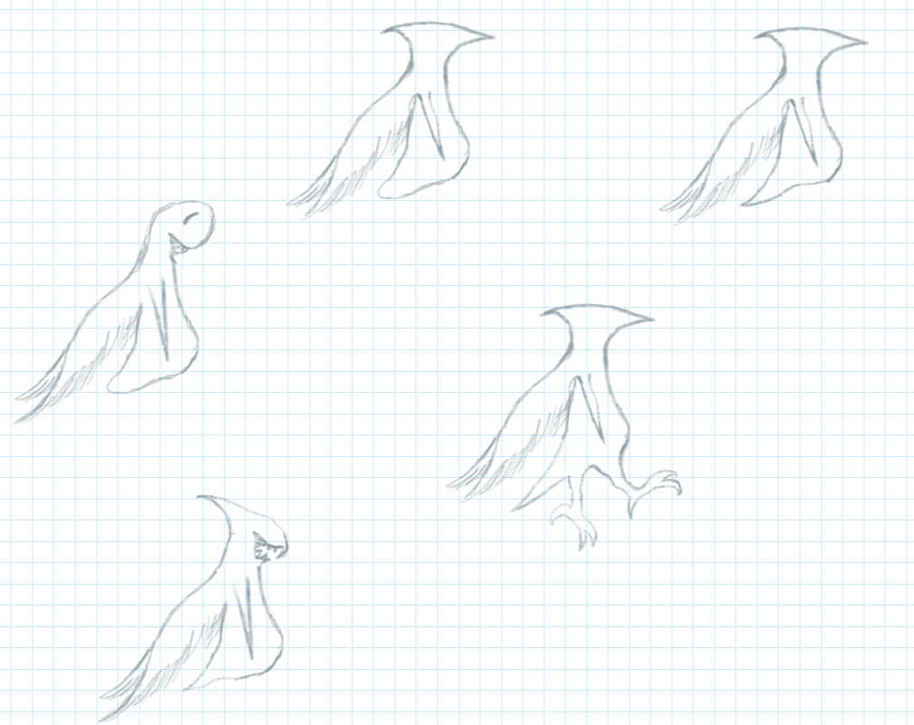

Golem
Golems sind beschwörbare, magische Kreaturen, die dem Befehl desjenigen unterliegen, der sie beschworen hat. Es ist ein Ritual notwendig, um einen Golem herbeizurufen. Es gibt verschiedenste Golems mit verschiedenen Eigenschaften und Anforderungen zum Beschwören. Für alle werden ein oder mehrere spezifische Gegenstände benötigt, eine gewisse Flüssigkeit und ein bestimmter Zauberspruch, unterschiedlich je nach Art des Golems. Diese Zusammensetzung variiert auch seine Stärke und Beschaffenheit. Einige Beschwörungen beinhalten Zauber und Gegenstände, deren Beschaffung und Benutzung von den meisten Magiern gemieden wird. Das Beherrschen solcher Golems, die Fähigkeiten besitzen, die in den falschen Händen einigen Schaden anrichten können, ist sowohl bei den meisten Magiern als auch der gemeinen Bevölkerung geächtet. Wer diese Golems beschwört und zu seinen Gunsten nutzt, muss damit rechnen auf Ablehnung zu stoßen und kann am falschen Ort auch persönliche Strafen erwarten.
Feuergolem
- Gegenstände: Kohle, Asche, etwas Brennendes (Fackel, Kerze etc.)
- Flüssigkeit: Wachs
Knochengolem
- geächtet
- Gegenstände: Knochen, Gehirn
- Flüssigkeit: Blut
Bodengolem
- Gegenstände: Bodenmaterial (Erde/Lehm/Sand)
- Flüssigkeit: Wasser
Gesteinsgolem
- Gegenstände: Gestein, Moos
- Flüssigkeit: Tau
Psychogolem
- geächtet
- Gegenstände: Puder des “blauen Traums”, Puppe, Edelstein (verändert die Farbe)
- Flüssigkeit: traurige Träne
- Fähigkeiten: kann Gedanken lesen, kann Leute manipulieren
Gemüsegolem
- Gegenstände: Gemüse/Obst
- Flüssigkeit: Brühe/Suppe
- relativ schwacher Golem
Pflanzengolem
- Gegenstände: Knochendorn, beliebige Pflanzen, Blätter, Wurzeln
- Flüssigkeit: Wasser
- Fähigkeit: heilende Kräfte
Fluggolem
- Gegenstände: Vogelflügel, Arm-/Handknochen
- Flüssigkeit: Regenwasser
- Fähigkeit: kann fliegen
Giftgolem
- geächtet
- Gegenstände: (Giftpflanze)
- Flüssigkeit: Gift
Säuregolem
- geächtet
- Gegenstände: Rinde des Sauerbaums
- Flüssigkeit: Säure des Sauerbaums
Wassergolem
- Gegenstände: (Fisch?)
- Flüssigkeit: Wasser
- Fähigkeit: kann Regen erzeugen (starker Golem)